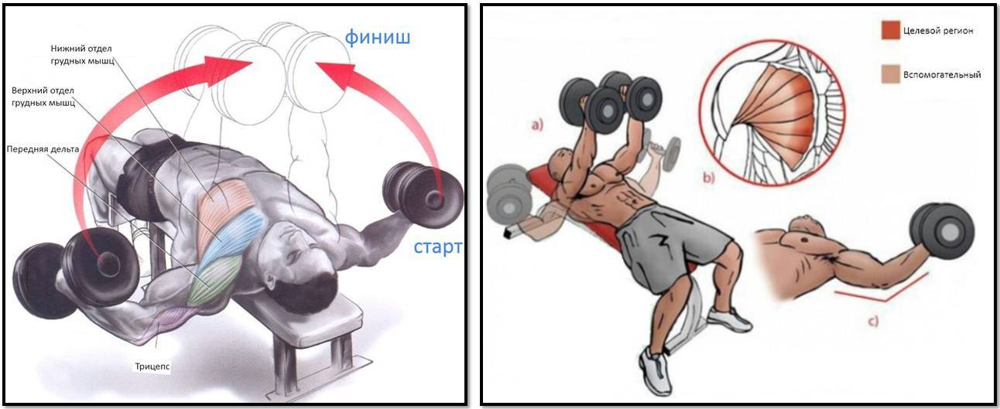
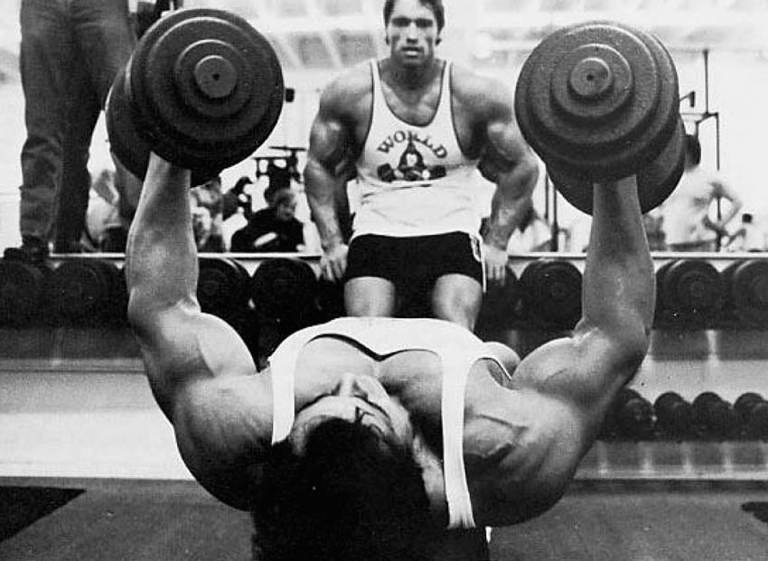
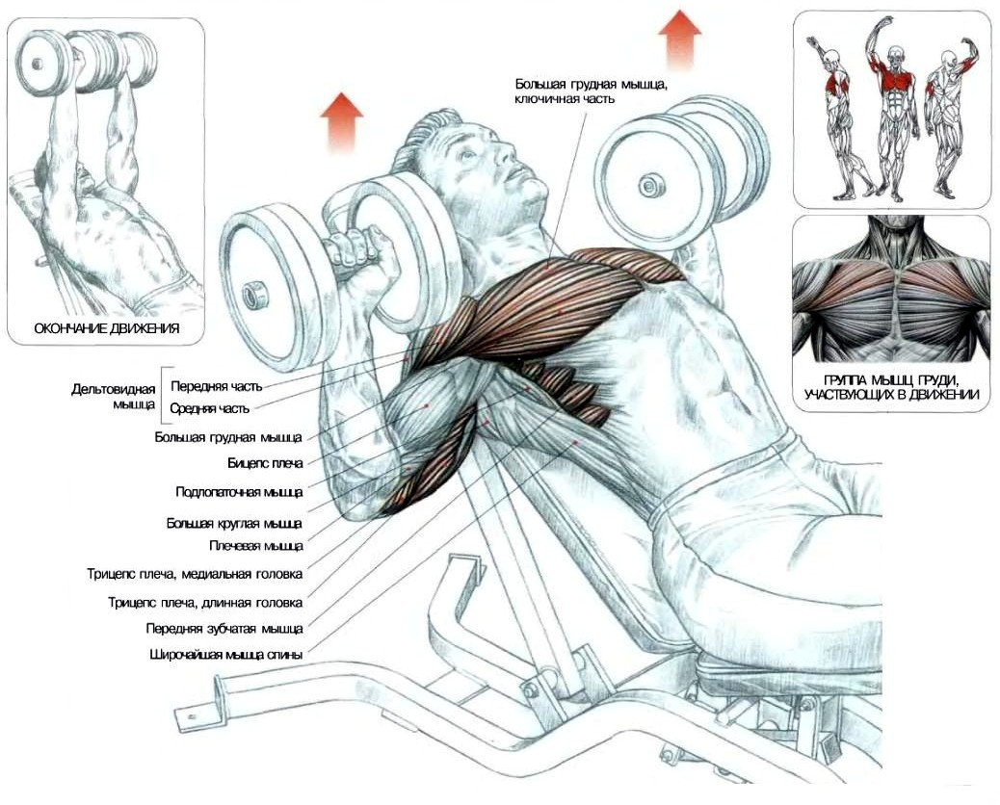

Жим штанги лёжа на горизонтальной скамье - базовое упражнение для развития грудных мышц.
В выполнении также участвует трицепс и передние дельты. Является ключевым упражнением
для набора мышечной массы в груди и плечах. Помогает сделать грудь более выраженной.
Техника выполнения упражнения
Подготовить скамью, откалибровать под собственный рост.
Ноги должны крепко стоять на полу, обеспечивая надежную опору.
Лечь на скамью, затылок, лопатки и ягодицы плотно прижаты к поверхности.
Выгнуть грудь колесом, максимально прогнутьсяв спине – это необходимо
для уменьшения траектории движения грифа.
Взять гриф сверху. Руки должны образовывать замок, хват – ладонями от себя.
Кисти расположены чуть шире плеч.
Снять штангу со стойки, сделать вдох и опустить ее к груди.
На выдохе выжать штангу вверх, полностью выпрямляя руки
Советы
Гриф блокируется кистью – для образования замка нужно большой палец положить
поверх остальных. Это необходимо для плотной фиксации штанги руками, и снижает
риск выскальзывания снаряда. Игнорирование правильного захвата чревато серьезными
травмами грудных мышц, челюсти и плечевого пояса,
так как именно эти части тела примут на себя удар падающей штанги.
Опускать штангу нужно плавно, а жать – с максимальной силой. Чем больше рывок
от себя, тем интенсивнее работают грудные мышцы.
Начиная осваивать упражнение, сложно сохранять нужный прогиб в пояснице.
Облегчить задачу поможет атлетический пояс.
Меняя ширину постановки руки можно сместить акцент на другие мышцы. Узкий хват
помогает прорабатывать срединную часть груди, широкий – внешнюю часть
Опуская штангу, ни в коем случае нельзя ударять ею о грудь. Во время выполнения
упражнения ноги не отрываются от пола, ягодицы крепко прижаты к скамье.
При болях в поясничном отделе упражнение противопоказано. Можно поэкспериментировать
с углом наклона скамьи, однако в большинстве случаев это не решит проблемы,
поэтому следует подобрать более щадящее упражнение для груди,и полностью
исключить жим штанги из тренировочного процесса.
Когда выполнять
В начале или середине любой тренировки грудных мышц,
перед изолирующими упражнениями. Если в тренировочном
плане такая тренировка отсутствует, можно дополнить жимом
штанги работу над спиной и плечами. Так как в выполнении
задействован трицепс, не рекомендуется делать
упражнение в один день с прорабатыванием мышц рук.
Количество повторений
3-4 подхода по 8-12 раз. Вес для среднего уровня подготовки – 20-30 кг.
Практическое видео
Разведение рук с гантелями лежа на горизонтальной скамье

Разведение рук с гантелями лёжа на горизонтальной скамье - изолированное упражнение
для развития грудных мышц. Второе название – сведение гантелей лежа.
Техника выполнения упражнения
Установить скамью в горизонтальном положении. Взять гантели необходимого веса и сесть на краю скамьи.
Лечь на скамью спиной, шея находится на опоре, голова не свисает вниз, затылок прижат к поверхности. Рекомендуется подложить по голову и спину собственное полотенце – так гигиеничнее. Ноги расставить широко, важно, чтобы они плотно стояли на полу, обеспечивая надежную опору. Затылок, лопатки, верх спины и таз прижаты к скамье, в пояснице естественный прогиб.
На вдохе поднять гантели над плечами, руки чуть согнуты в локтевом суставе. Во время выполнения упражнения угол сгиба локтевого сустава не меняется.
На выдохе развести руки в стороны, локти во время выполнения направлены строго вниз.
Почувствовав напряжение в грудных мышцах, опустить руки еще немного, до появления ощутимого напряжения. Задержаться в этой позиции на два счета и вернуться в исходное положение.

Советы
Важно правильно откалибровать высоту скамьи под собственный рост. Во время выполнения ноги должны прочно стоять на полу. При работе с большим весом крайне важна надежная опора, иначе высок риск получить травму.
В верхней точке следует свести руки так, чтобы гантели соприкоснулись. Некоторые тренера советуют полностью выпрямлять руки, поднимая их над грудью, но сгибать немного в локте, ведя их вниз. Выпрямление рук лучше практиковать при работе с небольшим и среднем весом, в остальных случаях это небезопасно.
Опускать руки нужно до уровня плеча. Дойдя до конечной точки, необходимо сделать небольшое усилие, чтобы растянуть мышцы, но не стоит пытаться выворачивать руки максимально низко – упражнение так не станет эффективнее, но может привести к травме.
Во время движения нужно следить за положением локтей. Они смотрят только вниз. Выворачивание суставов вперед увеличивает нагрузку на спину и бицепс, но уменьшает работу грудных мышц.
Не нужно брать предельный вес. Можно подготовить сразу два набора гантелей, чтобы по мере выполнения определить оптимальный вес. Новичкам рекомендуется начать с 4-6 кг, максимальный вес 15-20 кг.
Когда выполнять
В середине тренировки спины, груди и плеч. Упражнение растягивает грудные мышцы, поэтому его следует делать после нагрузки этой зоны, например, жима лежа.
Количество повторений
3-4 подхода по 10-15 повторений.
Практическое видео
Жим гантелей лёжа на наклонной скамье

Жим гантелей лёжа на наклонной скамье - базовое упражнение. Основное назначение – развитие верха грудных мышц, причем выполнение с гантелями эффективнее, чем жим штанги. Дополнительно задействует трицепс, дельты и широчайшие мышцы спины.
Техника выполнения упражнения
Подготовить скамью, установив спинку под углом от 30 до 450. Лечь на скамью, прижавшись к спинке затылком, спиной и бедрами. Лопатки сведены, стопы упираются в пол.
Взять гантели хватом сверху самому, либо попросить подать партнера, если речь идет о большом весе.
Руки согнуть в локте, гантели находятся на одной линии примерно на уровне плеч. Затем выжать снаряды вверх. Движение должно быть энергичным, выдох делается в момент сильнейшего сокращения грудных мышц. После опустить руки до плеч, сгибая в локте, и повторить жим.
Советы
Угол наклона имеет значения. Меньше 300 – работает средняя часть грудных мышц. В таком случае в упражнении смысла нет, лучше сразу выполнять на горизонтальной скамье. Наклон свыше 450 активно включает в работу плечи, нагрузка между ними и грудью делится пополам.
В жиме гантелей важна синхронность и слаженность движений. Гантели движутся на одной линии, не допускается заваливание снаряда или запаздывание одной руки.
Бедра всегда плотно прижаты к лавке, а в пояснице допускается естественный прогиб. Сильно выгибать спину «мостиком» не следует, особенно при работе с большим весом.
Локти максимально развернуты в стороны, если их держать близко к корпусу в работу активно включается трицепс.
В конце подхода гантели положить на бедра, встать со скамьи и поставить на стойку или на пол, но не бросать на пол. Бросок снарядов на вытянутых руках может стать причиной травмы плечевого сустава.
Когда выполнять
В начале любой тренировки груди. Если в план входит жим штанги, работой с гантелями можно завершить тренировку, чтобы окончательно «добить» мышцы.
Количество повторений
При работе с большим весом рекомендуется 3 подхода по 8-10 повторений. Чтобы «добить» грудь, достаточно взять половину рабочего веса, но выполнить 15 повторений в 2 или 3 подхода.